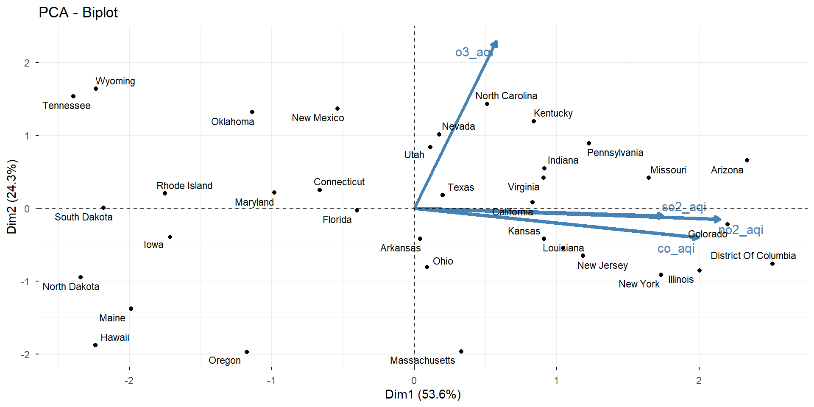
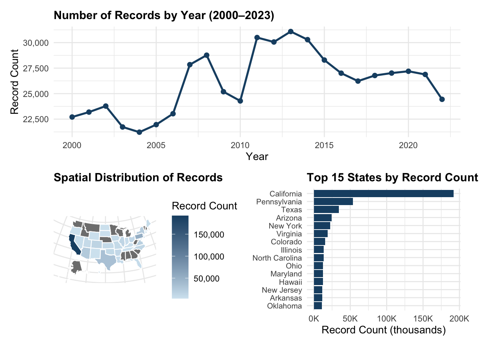
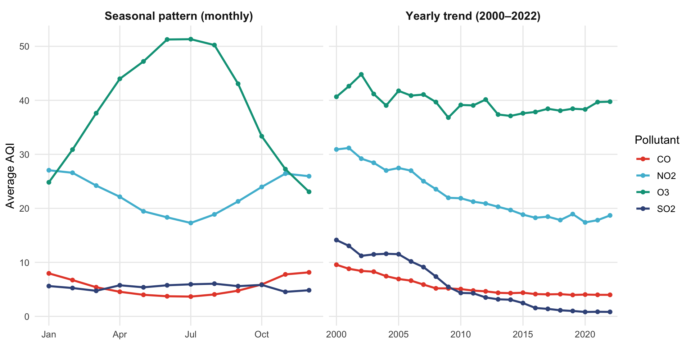
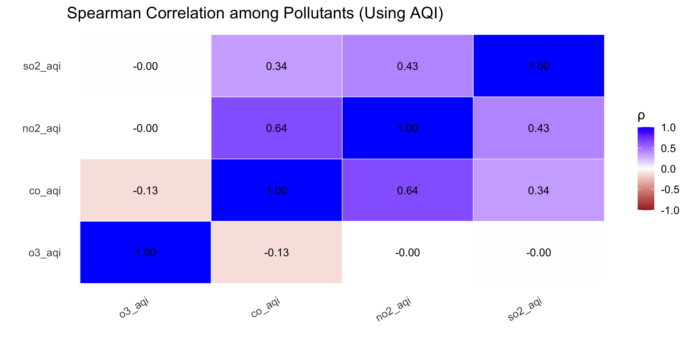
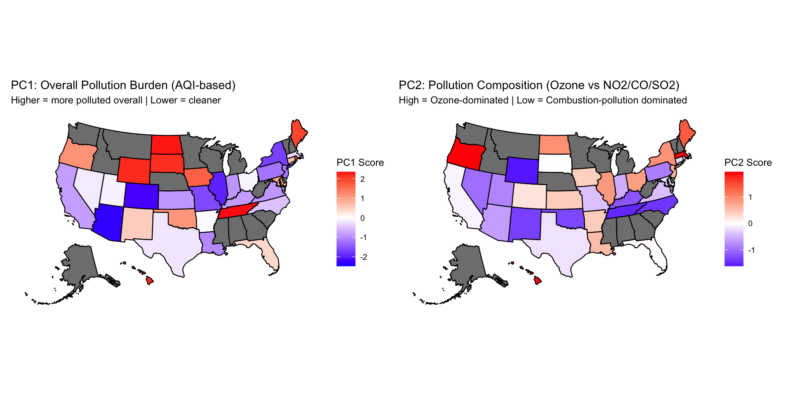
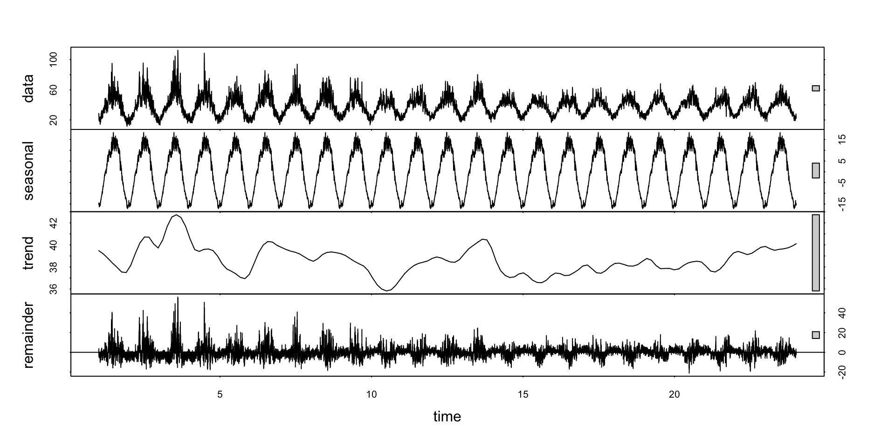
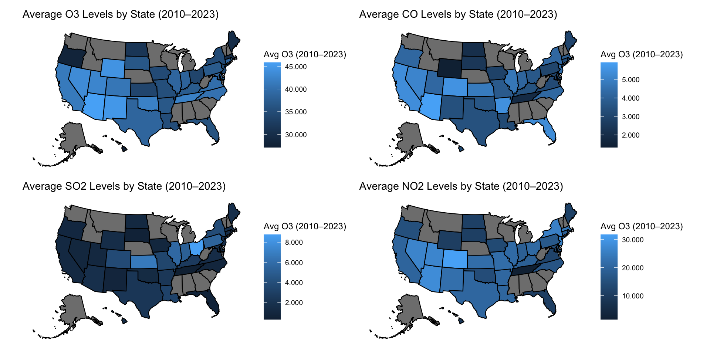

Visualizing Two Decades of U.S. Air Pollution (2000–2023)
Course: STAT 663 – Statistical Graphics and Data Visualization
Team: Siyao Huang & Minxi Li
Dataset
Data come from the U.S. Pollution Dataset (2000–2022) available on Kaggle.
This dataset is compiled from the U.S. EPA Air Quality System (AQS), which provides daily measurements of major air pollutants from monitoring stations across the United States.
For this project, the daily measurements are aggregated into state-level annual averages from 2000 to 2023.
The dataset includes four major pollutants:
- O₃ (Ozone)
- CO (Carbon Monoxide)
- SO₂ (Sulfur Dioxide)
- NO₂ (Nitrogen Dioxide)
Dataset

Research Question & Why It Matters
Main Research Question:
- How has U.S. air quality changed from 2000 to 2023 across time, regions, and pollutants?
Sub-questions:
- How do pollutant levels change over time?
- Which states or region are more polluted or cleaner?
- How do the four pollutants differ in behavior?
Why This Problem Matters
- Air pollution is directly linked to respiratory and cardiovascular risks.
- Long-term pollution trends help evaluate: Environmental policies (e.g., Clean Air Act), Regional inequalities and Public-health impacts.
- Understanding historical patterns supports better future planning and policy design.
Data Wrangling & Processing
- Main Cleaning Steps
- Standardized column names and parsed dates
- Extracted temporal features (
year,month) for trend and seasonality analysis - Removed invalid or negative pollutant values
- Ensured data quality by checking pollutant coverage across states and years
- Filtered out states with insufficient long-term coverage
- Excluded incomplete year 2023
- Merged with state-abbreviation lookup for mapping
- Major Challenges
- Missing pollutant values in early years
- Uneven monitoring coverage across states
- Aligning daily observations with state-level annual summaries
- Large dataset (~665k rows) requiring efficient processing
- Missing pollutant values in early years
Analytical Methods Used
- Exploratory Data Analysis (EDA / Temporal Trends)
- Computed annual & monthly averages for four pollutants
- Identified long-term trends and seasonality patterns
- Geospatial Analysis
- Animated maps to visualize year-to-year changes
- State-level choropleth maps
- Regional comparisons via boxplots
- Correlation Analysis
- Spearman correlation matrix to study relationships among pollutants
- Dimensionality Reduction (PCA)
- PCA to summarize the multi-pollutant burden
- Mapped PC1/PC2 to reveal spatial patterns and pollutant composition differences
- Time-Series Decomposition
- STL decomposition for pollutants to separate trend, seasonal, and remainder components
Section A. Long-Term Trend Analysis (2000–2023)
Temporal analysis
CO, NO₂ and SO₂ show clear long-term declines since 2000, while O₃ stays relatively flat with noticeable spikes in some years.
Seasonal Pattern

Most pollutants (NO₂, SO₂, CO) show clear long-term declines, while O₃ remains stable with strong, recurring summer peaks. This strong summer seasonality helps explain why O₃ remains challenging to control.
Section B. Multi-Pollutant Relationships
Correlation Among Pollutants
- Pollutants do not vary independently
PCA
Dim1 mainly loads on CO, NO₂, SO₂ → traditional emission-driven pollution.
Dim2 is dominated by O₃, forming its own dimension.
States in the Southwest and Southeast lean more toward the O₃ direction, while industrial states lean toward NO₂/SO₂.
PCA

PC1: Identifies which states are the most polluted overall.
PC2: Identifies what type of pollution dominates each state.
STL Decomposition - O₃
O₃ shows strong seasonality and weak correlation with other pollutants

Seasonal cycle is very strong and consistent every year
Trend shows early decline but a plateau in recent years
Remainder show short-term variability (weather, fires, local events)
Section C. Geographic Disparities
State-Level Pollution Patterns (2010–2023)
State-Level Pollution Changes Over Time
Early years show inconsistent state monitoring coverage
Spatial analysis therefore focuses on 2010–2022 for reliable comparisons
Regional Pollution Comparison (2010–2023)

CO: West has the highest CO AQI — influenced by wildfires + urban traffic.
NO₂: Northeast & West show higher NO₂ levels — dense traffic corridors.
SO₂: North Central region stands out — older industrial & energy facilities.
O₃: West has the highest O₃ — driven by strong sunlight and elevation.
AI-Assisted Workflow Reflection
- How I Used AI
- Described the types of visual patterns I wanted to explore
- Asked for suggestions on plot types (animation, PCA, seasonality, etc.)
- Used AI-generated R code as a starting point
- Improved slide layout, narrative, and storytelling with AI guidance
- Benefits
- Accelerated exploratory data analysis
- Suggested visualization ideas I hadn’t considered
- Improved the clarity and appearance of plots
- Helped maintain consistent storytelling across slides
AI-Assisted Workflow Reflection
- Limitations
- Sometimes suggested variables not in the dataset
- Produced repetitive or overly long code that required rewriting
- Needed human verification for statistical interpretation (PCA meaning, correlations, etc.)
- Lacked full context awareness; required manual refinement for reproducibility
- Sometimes suggested variables not in the dataset
- Ensuring Reproducibility
- Rewrote and cleaned AI-generated code to ensure correctness and consistency
- Verified statistical interpretations independently rather than relying on AI output
- Organized all final code, data transformations, and figures into a fully reproducible workflow
- Ensured all scripts are executable end-to-end without AI intervention
- Rewrote and cleaned AI-generated code to ensure correctness and consistency
Final Product Demonstration
Conclusions
- Key findings
- U.S. air quality has improved since 2000, with NO₂, SO₂, and CO showing strong long-term declines.
- O₃ remains the main challenge: trend is flat and summer peaks persist.
- Clear regional differences: Western states show higher O₃; combustion pollutants decreased most in the Northeast & Midwest.
- Pollutants behave differently: NO₂/SO₂/CO decline together, while O₃ follows seasonal photochemical patterns.
Conclusions
- Limitations
- Uneven monitoring coverage may bias early-year trends.
- AQI averages may smooth out short-term extreme events (wildfire spikes).
- Analysis is descriptive, not causal.
- Next Steps
- Add meteorological factors (temperature, sunlight) to explain O₃ patterns.
- Incorporate wildfire indicators to capture recent extreme events.
- Extend to city- or county-level data for finer spatial detail.
Thank you!